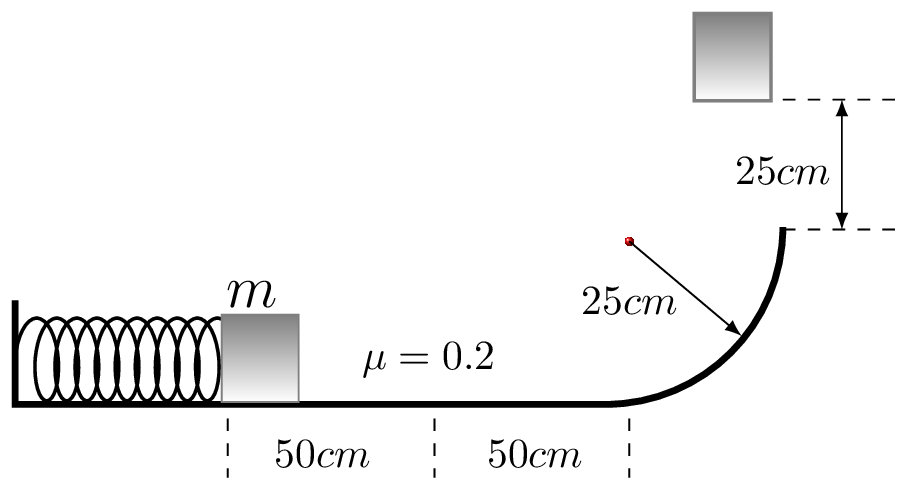

A horizontal force is given by the equation \(F = k x\text{,}\) where \(k = 100 \,N/m\text{.}\) How much work is expended by that force when moving an object from \(x = -1 \,m\) to \(x = +3 \,m\text{?}\)
A force has the components \(F_{x} = A(x+y)\text{,}\)\(F_{y} = Bxy\text{,}\) where \(A = 2 \,N/m\) and \(B = 3 \,N/m^{2}\text{.}\) Find the work done by this force along the paths
A force of 100 N moves a block of mass 10 kg up a plane of length 2 m at an angle of \(30^{o}\text{.}\) If the force is parallel to the plane, if the block starts from rest, and if the coefficient of friction is 0.1, how much work is done
A force of 100 N at an angle of \(30^{o}\) above the horizontal moves a block of mass 10 kg along a horizontal surface a distance of 3 m. If the block starts from rest and if the coefficient of friction is 0.2, how much work is done
If it penetrates a block of wood a distance of 10 cm before coming to rest, what is the average frictional force stopping the bullet? A second bullet identical to the first is shot through a sheet of wood 5 cm thick.
A spring of mass 2 kg and spring constant 300 N/m is compressed a distance of 0.5 m and clamped in that position. When the clamped spring is 4 m above the ground traveling horizontally with a speed of 5 m/s find each of the following:
If the clamp holding the spring is released so the spring returns to its original length by the time the system falls all the way to the ground and comes to rest, find each of the following:
A mass of 2 kg is placed against the end of spring compressed a distance of 50 cm as shown in the figure below. The system is released, the mass moves horizontally a total distance of 1 meter over a surface with a coefficient of kinetic friction of 0.2, slides up a smooth ramp of radius 25 cm, and then flies straight up a distance of 25 cm above the top of the ramp.

What is the equation for the total energy of the mass when it starts out?
A portion of a roller coaster is shaped like a sine wave according to the equation \(y = A \cos kx,\) where A = 50 ft and k = 0.04/ft. Assume that friction consumes approximately 10\% of the energy as the coaster moves from the high point to the next low point and that the coaster is moving at 10 ft/s at the top, find the speed of the coaster at the bottom.
A rocket of mass 5 kg accelerates upward at a constant 4 g’s for 5 sec starting from rest. Assume the mass of the fuel is negligible so the mass of the rocket can be considered constant throughout the acceleration.
How much energy is imparted to the rocket during the first second?
A small pellet of mass m = 0.2 kg starts from rest at position A and slides down the smooth surface of the cylinder to position B. The radius R = 0.8 m. Use conservation of energy to determine the magnitude of the pellet’s velocity at position B if \(\theta = 45^{o}\text{.}\)
A spring gun has a spring constant of 200 N/m and shoots a projectile of mass 500 g. If the spring is compressed a distance of 10 cm into the barrel of the gun and the friction force in the gun barrel is 4 N, how high will the projectile rise above the tip of the gun barrel if
A rock of mass 200 g is placed in a sling and whirled in a vertical circle of radius 50 cm. The rock is released when traveling vertically and rises to a height of 4 m above its starting point.
What was the velocity of the rock when it was released from the sling?
A strongman sitting in the back of a motor boat of mass 2000 kg is holding a rope tied to the front of a canoe with its contents of 500 kg. The motor boat starts out towing the canoe and eventually attains a constant speed of 10 m/s for a distance of 100 m. During that time the man feels a constant tension in the tow rope of 100 N.
How much energy does the man expend while towing the canoe?
The power required to move an object is \(P = K t^{3}\text{,}\) where \(t \) is the time and the constant \(K = 3 \,W/s^{3}\text{.}\) How much energy is required to move the object during the first 4 seconds?
If the energy conversion from mechanical energy to electrical energy in the alternator is \(90\%\text{,}\) how much power must the motor deliver in order to generate 50 Watts of electrical power?
A force rises linearly from zero to 106 Newtons in two milliseconds and then decreases linearly back to zero in the next two milliseconds. What is the total impulse of that force.
A force is described mathematically by the equation \(F = F_{o}[1 - (t - 1)^{2}]\text{,}\) where \(F_{o} = 100 \,N\) and t is expressed in seconds and ranges from zero to 2 seconds. What is the impulse of this force?
A block of mass 1 kg moving to the right with a speed of 1 m/s strikes a second block of mass 2 kg moving to the left with a speed of 2 m/s. The first mass bounces back with a speed of 2 m/s.
What is the velocity (magnitude and direction) of the second mass after the collision?
If the gun is mounted on a 1,000 kg boat whose friction through the water is proportional to velocity according to the equation f = cv, where c = 10 kg/s, then how fast could the machine gun make the boat travel across the water?
A pool ball traveling along the x-axis at \(2 \,m/s\) strikes a second ball of equal mass and glances off at an angle of \(30^{o}\) above the x-axis. If the collision is perfectly elastic,
what is the direction that the second ball moves after the collision?
A bullet of mass 50 g traveling at 400 m/s due north strikes a rock of mass 500 g at rest and ricochets off the rock going due east. The rock recoils in a direction \(30^{o}\) west of north.
A car of mass 700 kg moving west at a speed of 72 km/h makes an inelastic collisions with a truck initially moving northward. If the tangled mass of car and truck slides off in the north-west direction a distance of 10 m when the coefficient of friction is 0.8, what was
A bullet of mass 0.1 kg moving horizontally passes through a wooden block of mass 10 kg initially at rest and looses 90\% of its kinetic energy. The recoiling block slides a distance of 1 m on a horizontal surface of friction constant 0.3 before coming to rest. What was the initial speed of the bullet.
A block of wood of mass 1 kg is balanced on the end of a pistol barrel and the pistol is fired. The block of wood flies upward a distance of 1 m with the bullet embedded inside. What is the muzzle velocity of the bullet if its mass is 10 g?
A 0.1-kg mass of putty drops from a height of 1 m onto a platform of 1 kg setting on a spring of constant 100 N/m. The putty sticks to the platform causing it to recoil downward and compress the spring. How much is the spring is compressed before it comes to rest again.
A spherical ball of mass 1 kg and radius 3 cm is attached to a wire of length 2 m to form a pendulum. The top of the pendulum is attached to a wall near the top. The wire is pulled straight out horizontally and the ball is released from rest. The ball strikes the wall and rebounds a horizontal distance of 1 m. The wall is dented a distance of 1 cm.
What is the speed of the ball when it strikes the wall?
A 500 N boy sitting in a stationary 90 N wagon is start throwing bricks out of the wagon. If the boy has three bricks weighing 45 N each and throws them with a horizontal velocity of \(3 \,m/s\) relative to the wagon, determine the velocity he attains
A bullet of mass m penetrates a block of mass M lying on a frictionless table. If the initial velocity of bullet is \(v_{1}\) and it exits form the block with velocity \(v_{2}\text{,}\) find the time taken by the block to fly off the table if it is at a distance L from the edge of the table. If the table has a height h how far from the edge of the table will it land?